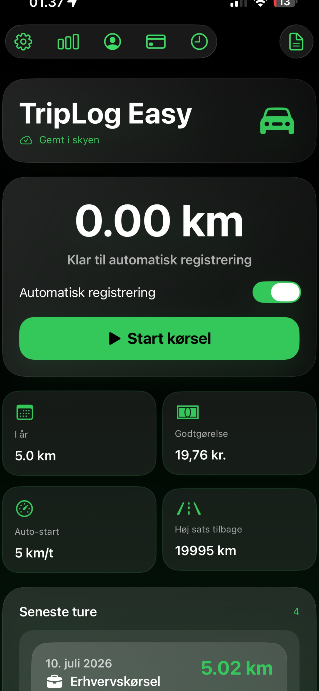

Make sure Location Services are enabled for TripLog Easy and that automatic tracking is turned on in the app.
Location is used to detect and record your drives and calculate the distance of your trips.
Open the settings in TripLog Easy and enter the mileage rate you want to use for your calculations.
Yes. Trips can be classified so you can keep business and private driving separate.
Yes. TripLog Easy can create a PDF report containing your recorded trips for documentation.
Check that automatic tracking is enabled and that TripLog Easy has the required location and motion permissions on your device.
If you couldn't find the answer above, please contact KunaCoder.